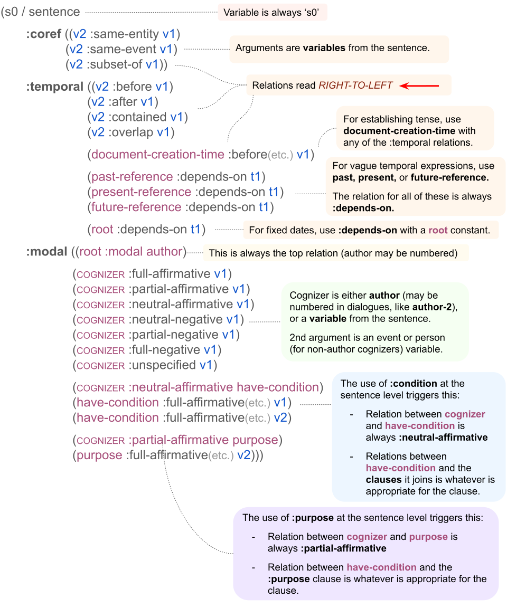

Unlike the sentence-level graph, each of the three top-level relations in the dependency (:coref, :temporal, and :modal) can as many children as necessary. Each of these children consists of a relation with two arguments. Importantly, some relations that fall under :coref and :temporal have a directional relationship between their two arguments, these should be read right-to-left, rather than left-to-right (opposite of the sentence-level graph). Arguments are either variables from the sentence or a constant value.
(Current as of June 2025.)
| Relation | Definition |
|---|---|
:same-entity |
Two entity concepts have the same referent. |
:same-event |
Two event concepts have the same referent. |
:subset-of |
A set/member or part/whole relationship between two events or entities. |
These relations should be read right-to-left. Arguments are either variables from the sentence (all events and all time-expressions should receive a :temporal annotation at the document level), or constants that represent certain document-related temporal landmarks. The constant document-creation-time can be used to establish the tense of an event and also to anchor 'now' type time-expressions. The other constants represent vague temporal regions, used for vague time-expressions.
(Current as of June 2025.)
| Relation | Constant Arg | Definition |
|---|---|---|
:before |
document-creation-time |
The argument on the right occurs before the argument on the left. Pope was in remission from a rare form of bone cancer when he was arrested in Russia. (s7h / have-mod-91 :ARG1 (s7p / person :wiki "Edmond_Pope" :name (s7n / name :op1 "Pope")) :ARG2 (s7r / remission-02 :ARG1 (s7d / disease :wiki - :name (s7n2 / name :op1 "bone" :op2 "cancer") :ARG1-of (s7r2 / rare-02)) :temporal (s7a / arrest-01 :ARG1 s7p :place (s7c / country :wiki "Russia" :name (s7n3 / name :op1 "Russia"))) :aspect performance) :aspect state) (s7s0 / sentence :coref ((s6p :same-entity s7p)) :temporal ((s2c :before s7a) (s7a :overlap s7h)) :modal ((author :full-affirmative s7h) (author :full-affirmative s7a))) |
:after |
The argument on the right occurs after the argument on the left. Abdel-Maksoud stated the confiscation will affect the Brotherhood's financial bases. (s / state-01 :ARG0 (p / person :name (n / name :op1 "Abdel-Maksoud")) :ARG1 (a / affect-01 :ARG0 (c / confiscate-01) :ARG1 (b / base :poss (o / organization :name (n2 / name :op1 "Brotherhood")) :mod (f / finance)) :aspect performance :quot s) :aspect performance) (s2/ sentence :coref ((s1c :same-event s2c)) :temporal ((s1c :after s2s) (s2s :after s2a)) :modal ((author :full-affirmative s2s) (author :full-affirmative s2p) (s2p :full-affirmative s2c) (s2p :full-affirmative s2a))) |
|
:contained |
The argument on the right occurs entirely within the duration of the argument on the left. Arguments may be variables from the sentence (events or time-expressions), or document-creation-time. Edmund Pope tasted freedom today for the first time in more than eight months. (t / taste-01 :ARG0 (p / person :name (n / name :op1 "Edmund" :op2 "Pope")) :ARG1 (f / free-04 :ARG1 p) :temporal (t2 / today) :ord (o / ordinal-entity :value 1 :range (m / more-than :op1 (t3 / temporal-quantity :quant 8 :unit (m2 / month)))) :aspect performance) (s0 / sentence :temporal ((document-creation-time :depends-on t2) (t2 :contained t)) :modal (author :full-affirmative t)) |
|
:overlap |
There is overlap between the time spans of the two events. This includes exact overlap, when the two events occur at the same time for the same duration. Arguments may be variables from the sentence (events or time-expressions), or document-creation-time. Pope was in remission from a rare form of bone cancer when he was arrested in Russia. (s7h / have-mod-91 :ARG1 (s7p / person :name (s7n / name :op1 "Pope")) :ARG2 (s7r / remission-02 :ARG1 (s7d / disease :name (s7n2 / name :op1 "bone" :op2 "cancer") :ARG1-of (s7r2 / rare-02)) :temporal (s7a / arrest-01 :ARG1 s7p :place (s7c / country :name (s7n3 / name :op1 "Russia"))) :aspect performance) :aspect state) (s7s0 / sentence :coref (s6p :same-entity s7p) :temporal ((s2c :before s7a) (s7a :overlap s7h)) :modal ((author :full-affirmative s7h) (author :full-affirmative s7a))) |
|
:depends-on |
document-creation-time |
For 'now' type time-expressions. Left argument must be document-creation-time, right argument must be a time expression variable, and the relation must be :depends-on. Edmund Pope tasted freedom today for the first time in more than eight months. (t / taste-01 :ARG0 (p / person :name (n / name :op1 "Edmund" :op2 "Pope")) :ARG1 (f / free-04 :ARG1 p) :temporal (t2 / today) :ord (o / ordinal-entity :value 1 :range (m / more-than :op1 (t3 / temporal-quantity :quant 8 :unit (m2 / month)))) :aspect performance) (s0 / sentence :temporal ((document-creation-time :depends-on t2) (t2 :contained t)) :modal (author :full-affirmative t)) |
past-reference |
For vague time-expressions that lie in the past relative to the document-creation-time. Left argument must be past-reference, right argument must be a time expression variable, and the relation must be :depends-on. In days of yore, Pekinese were popular. (p / popular-01 :ARG1 (a / animal :refer-number plural :mod (b / breed :name (n / name :op1 "Pekinese"))) :temporal (d / day :refer-number plural :mod (y / yore)) :aspect state) (s0 / sentence :temporal ((past-reference :depends-on d) (d :contained p))) |
|
present-reference |
For vague time-expressions that overlap the present relative to the document-creation-time. Left argument must be present-reference, right argument must be a time expression variable, and the relation must be :depends-on. Nowadays, Doodle dogs are popular. (p / popular-01 :ARG1 (d / dog :refer-number plural :mod (b / breed :name (n / name :op1 "Doodle"))) :temporal (n2 / nowadays) :aspect state) (s0 / sentence :temporal ((present-reference :depends-on n2) (n2 :contained p))) |
|
future-reference |
For vague time-expressions that lie in the future relative to the document-creation-time. Left argument must be future-reference, right argument must be a time expression variable, and the relation must be :depends-on. Someday, a new breed will be popular. (p / popular-01 :ARG1 (b / breed :ARG1-of (n / new-01)) :temporal (s / someday) :aspect state) (s0 / sentence :temporal ((future-reference :depends-on s) (s :contained p))) |
|
root |
For absolute time expressions (dates). Left argument must be root, right argument must be a time expression variable, and the relation must be :depends-on. On Dec. 15, 2024, I got an Australian Mountain Doodle puppy. (g / get-01 :ARG0 (p / person :refer-person 1st :refer-number singular) :ARG1 (p2 / puppy :mod (b / breed :name (n / name :op1 "Australian" :op2 "Mountain" :op2 "Doodle"))) :temporal (d / date-entity :day 15 :month 12 :year 2024) :aspect performance) (s0 / sentence :temporal ((root :depends-on d) (d :contained g)) :modal ((root :modal author) (author :full-affirmative g))) |
The :modal-strength, :modal-predicate, and :quote relations, as well as :purpose and :condition discourse relations, trigger and may be automatically converted into annotations at the document level. When this occurs, the sentence-level relations become redundant and do not need to be retained. The basic idea is that all event that are described by the speaker are asserted with some amount of modal strength on the part of the speaker. Some events also have modal strength that is attributed to some cognizer other than the speaker. For example, sensations, cognitive processes, and quoted/attributed speech are all related to a cognizer who may be different from the speaker. In the document-level modal dependency, all events from the sentence are assigned cognizers and labeled with the modal strengths those cognizers hold. If the author is the cognizer, the constant author is used. (In dialogues, there may be multiple authors, labeled like 'author-1,', 'author-62', etc.). The following table shows how sentence-level :modal annotations convert to document-level :modal annotations. (Current as of June 2025.)
| Sent-Relation | Doc-Annotation | Description |
|---|---|---|
:modal-strength VALUE |
:modal ((cognizer :VALUE event-var)) |
:modal-strength is a relation between a parent event and a constant value. At the sentence level, the cognizer isn't listed, so this information needs to be filled in at the document level. At the doc-level, the cognizer becomes the left argument, the modal-strength value becomes the relation (e.g. :modal-strength full-affirmative → :full-affirmative), and the right argument is the parent event's variable from the sentence.
I got an Australian Mountain Doodle puppy. (g / get-01 :ARG0 (p / person :refer-person 1st :refer-number singular) :ARG1 (p2 / puppy :mod (b / breed :name (n / name :op1 "Australian" :op2 "Mountain" :op2 "Doodle"))) :aspect performance :modal-strength full-affirmative) (s0 / sentence :temporal ((document-creation-time :before g)) :modal ((root :modal author) (author :full-affirmative g))) Mary thought that John didn't go. (t / think-01 :ARG0 (p / person :name (n / name :op1 "Mary")) :ARG1 (g / go-02 :ARG0 (p2 / person :name (n2 / name :op2 "John")) :aspect performance :modal-strength full-negative) :aspect state :modal-strength full-negative) (s0 / sentence :temporal ((document-creation-time :before k)) :modal ((root :modal author) (author :unspecified t) (author :full-affirmative p) (p :full-negative g))) |
|
(m / modal-event
:ARG0 (c / cognizer)
:ARG1 (c2 / complement :modal-predicate m) :modal-strength VALUE) |
:modal ((author :VALUE m)
(author :full-affirmative c) (c :entailed-modstr-from-m c2)) |
There is a modalizing predicate in the sentence whose complement inherits an entailed modal strength. :modal-predicate is marked on the complement argument event at the sentence level. The cognizer of this complement event can be automatically extracted from the parent verb, for which it is the :ARG0. He denied any wrongdoing. (d / deny-01 :ARG0 (p /person :refer-person 3rd :refer-number singular) :ARG1 (t / thing :ARG1-of (d2 / do-02 :ARG0 p :ARG1-of (w / wrong-02) :modal-predicate d)) :aspect performance :modal-strength full-affirmative) (s3/ sentence :coref ((s2p :same-entity s3p)) :temporal ((document-creation-time :before s3d) (s3d :before s3d2)) :modal ((author :full-affirmative s3d) (author :unspecified s3d2) (author :full-affirmative s3p) (s3p :full-negative s3d2))) |
(s / speech-event
:ARG0 (c / cognizer)
:ARG1 (u / utterance
:modal-strength VALUE |
:modal ((author :full-affirmative s)
(author :full-affirmative c) (c :VALUE u)) |
For quoted or attributed speech predicates. The author is the cognizer who asserts that the speech event occurred, but the actor in the speech event is the cognizer of the events relayed in the utterance. She told me that they they're not attending. (t / tell-01 :actor (p / person :refer-person 3rd :refer-number singular) :theme (a / attend-01 :polarity - :actor (p2 / person :refer-person 3rd :refer-number Plural) :aspect activity :modal-strength full-negative :quote t) :recipient (p3 / person :refer-person 1st :refer-number singular) :aspect performance :modal-strength full-affirmative) (s0 / sentence :modal ((author :full-affirmative t) (author :full-affirmative p) (p :full-negative a))) |
|
(e / event
:actor (c / cognizer)
:purpose (p / purpose-event :modal-strength VALUE-1) :modal-strength VALUE-2) |
:modal ((author :VALUE-2 e) (author :full-affirmative c) (c :partial-affirmative purpose) (purpose :VALUE-1 p)) |
Purpose clauses automatically have partial modal-strength, and their cognizer is the actor of the parent event with a subordinate purpose clause. They dropped water in order to fight the fire. (d / drop-01 :ARG0 (p / person :refer-person 3rd :refer-number Plural) :ARG1 (w / water) :purpose (f / fight-01 :ARG0 p :ARG1 (f / fire) :aspect activity :modal-strength full-affirmative) :aspect performance :modal-strength full-affirmative) (s0 / sentence :temporal ((past-reference :contained s1d) (s1d :after :s1f)) :modal ((author :full-affirmative s1d) (author :full-affirmative s1p) (s1p :partial-affirmative purpose) (purpose :full-affirmative s1f))) |
|
(e / event
:condition (c2 / conditional-event
:modal-strength VALUE-1)
:modal-strength VALUE-2) |
:modal ((author :neutral-affirmative condition)
(condition :VALUE-1 c2) (condition :VALUE-2 e)) |
The conditional discourse relationship is itself neutral-affirmative, but each of the clauses involved (the main event and the conditional event) also have individual modal strength. The author therefore has a :neutral-affirmative relationship with the have-condition concept, and that concept has modal-strength relations with the two constituent events that align with their individual modal strengths. If she's hungry, I'll probably cook pasta. (c / cook-01 :ARG0 (p / person :refer-person 1st :refer-number singular) :ARG1 (p2 / pasta) :condition (h / hunger-01 :ARG0 (p3 / person :refer-person 3rd :refer-number singular) :aspect state :modal-strength full-affirmative) :aspect performance :modal-strength partial-affirmative) (s0 / sentence :modal ((author :neutral-affirmative condition) (condition :full-affirmative h) (condition :neutral-affirmative c))) |